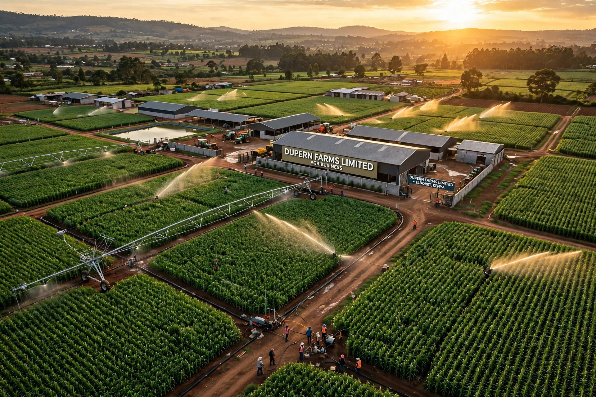

About Me
I am Peter Kebaso Gichana, a multidisciplinary professional bridging data analytics, public sector energy leadership, financial management, construction oversight, and agricultural innovation through Dupern.

Professional Background & Certifications
- director of energy (kisii county government): overseeing public sector energy infrastructure, sustainable county reporting, and rural electrification projects.
- Data Analytics & AI: Proficient in Python, Pandas, Jupyter Notebooks, Power BI, and advanced Excel pipelines.
- Academic Studies: Pursuing a Master of Business Administration in Finance and Investment at the Open University of Kenya.
- Certifications: Project Management Professional (PMP) and International Diploma in Occupational Health and Safety.
Core Philosophy
I combine data-driven decision-making with rigorous project management frameworks to deliver scalable, sustainable solutions across both public infrastructure and private enterprise.

About Peter Kebaso Gichana
Energy director, data analytics practitioner, and MBA Finance & Investment candidate building practical tools and systems.